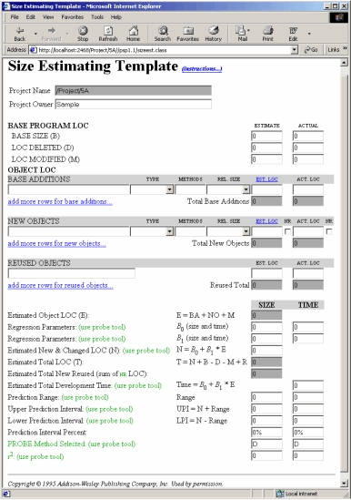

The Size Estimating Template is used to help make estimates of how big a new software project will be or how long it will take to create the project (size and time estimation). It is patterned after the Size Estimating Template from Watts Humphrey's book A Discipline for Sofware Engineering (table C39). The online version of this form takes advantage of dynamic HTML to make the form easier to use.
Here is the form as it appears for PSP1.1 and later processes (PSP1 lacks the time estimation section and only estimates program size).

Right near the top of the form is a link to bring up the Size Estimating Template instructions form (table C40). The dashboard will bring up the instructions in a separate web browser so that the two can be placed side by side on your screen.
Also, there are several links on the form that will add rows to the form. If you need more room than the form provides, just click on the appropriate link and it will expand for you (so much better than paper!)
The header section contains entries for the name of the project and your name. Both of these fields should be automatically filled in by the dashboard (if your name does not appear, go ahead and enter it -- it will show up on the other forms as well).
The Base Program LOC section is where you enter the information about any base LOC that are going to go into your project. The form has blanks for both ESTIMATED and ACTUAL sets of data. When using this form for planning purposes, the ESTIMATED columns should get filled in. After the project is finished and you are in the postmortem phase, you should enter data in the ACTUAL columns.
The form asks for the base LOC size, the number of deleted LOC, and the number of modified LOC. In the base LOC entry, enter the number of LOC that will be used for the project that already exist at the time the project starts. For example if you are creating a modification to an already existing program, the LOC from the existing program count as base LOC.
The form also asks for the number of deleted and the number of modified LOC. These are LOC that were part of the base program that are either deleted or changed during the software project.
The PSP tends to refer to all programming modules as objects. If you are programming in an object oriented language such as C++, Java, or Smalltalk, then it makes sense to think in terms of real O-O objects. If however you are programming in a non-object oriented language such as C, FORTRAN, or even LISP, then it makes more sense to think in logical groupings of functionality such as functions or subroutines or procedures.
Base Additions LOC are lines added to objects/modules that already exist in the base program. The form gives blanks for a description of the added code, the type of functionality that is being added, the number of methods that are going to be added of this type, the relative size of these methods, and estimates/measures of the LOC that are being added.
The type field is one of Calculation, Data, I/O, Logic, Setup or Text. Whichever of these categories best fits the type of new code that is being added should be chosen from the drop down.
The number of methods really only applies to object oriented and/or object based languages. If you are not programming in such a language, you can simply put 1 in this entry to indicate that you are creating functions or subroutines.
The relative size pull down allows you to choose from subjective size categories such as Very Small, Small, Medium, Large, and Very Large. The division between categories will vary by language and by your experience. The categorization of relative size is only to help you in your estimates. Watts Humphrey goes through how to determine the cutoff for the various size categories in A Discipline for Software Engineering.
In the estimated and actual LOC blanks you are to enter LOC amounts. The table that Watts Humphrey provided for relating relative sizes to C++ LOC is available from the link marked "EST. LOC". Again, only your data can direct how many LOC belong in each category.
The totals will update automatically as you enter your data.
New Objects are probably where the bulk of new development will happen in most of your projects. The entries are identical to those discussed in the Base Additions section with one exception. Beside the estimated and actual LOC columns are columns of little checkboxes. Put a check in these boxes if the new object on the corresponding line is considered a "New Reused" LOC. "New Reused" code is code that is sufficiently general purpose that it can be checked into a reuse library. Generally this means more than just code that can probably be reused in the general sense. It usually has to do with proper packaging of the code as well: Are proper interfaces defined? Is the code sufficiently well documented? Etc.
Reused Objects are objects that are brought into the program from a reuse library. The line between a reused object LOC and a base LOC can sometimes get blurry. The main rule is that you must not count the same LOC as both base and reused. The LOC counting formulas will not work out correctly in that case.
Once you have thought through all the changes that are going to be made to the software, you are ready to calculate a prediction of size and or time. The form will add up the estimated object LOC for you. This is the number that you will use as your base estimate in the PROBE method. For more information about the PROBE method and the PROBE tool provided by the dashboard, see the Using the PROBE tool help topic.
You should use the PROBE tool (if possible -- see the PROBE tool help for situations when it is not possible) to get an estimate for new & changed LOC and/or time based on your previously recorded project data. Once you have investigated the relationships among your process data, you should enter the estimates back on this form. If you were able to use a linear regression method, enter the upper and lower prediction intervals as well. If you were not able to use linear regression, these two entries should be skipped.
That's all the data that has to be entered on this form. The dashboard calculates as much of the data for you as possible. The numbers entered and calculated on this form will automatically appear on the Project Plan Summary form.